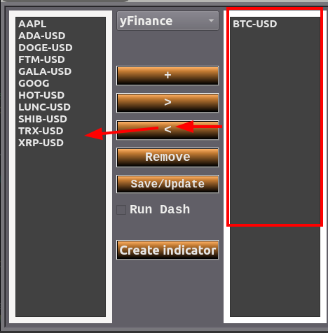
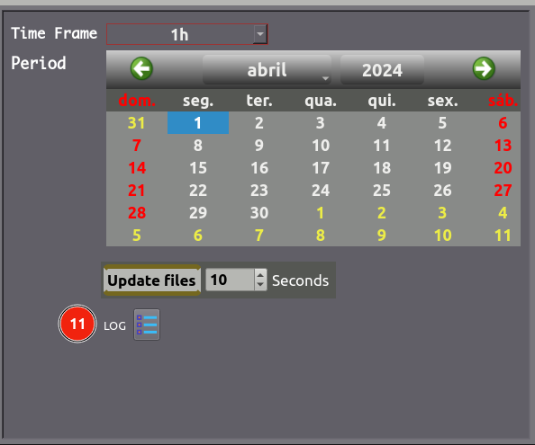
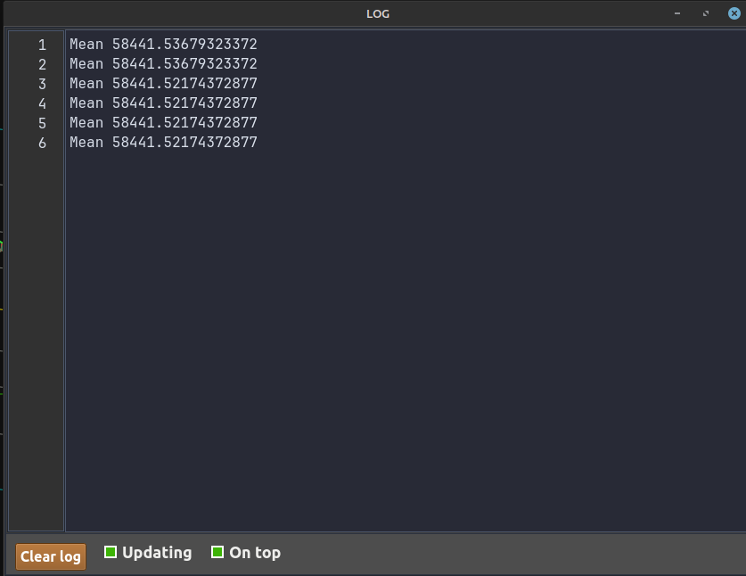
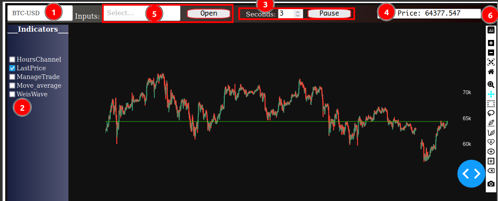
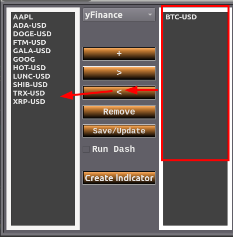
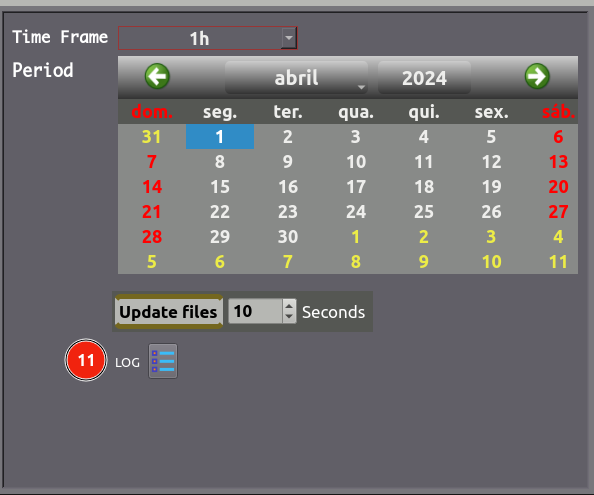
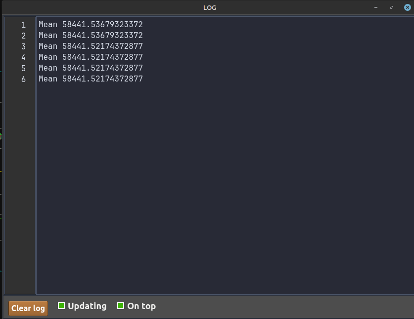

1º Criar lista de símbolos
Botão +, cria novo item na lista da esquerda, duplo clique no novo item para renomear.
Botões > e <, utilizado para mover valores de uma lista para outra.
Botão remove, exclui o valor selecionado de qualquer lista.
** Obs: Após qualquer alteração, precisa salvar!!!2º Manipular lista para observação e selecionar o período desejado
* 1 – Selecione a exchange, existem 2 opções, yFinance e binance.
** Obs: Caso escolha binance precisa acessar o menu 'ApiKey Binance' e inserir sua chave privada criada em sua conta na binance.
* 2 – Lista da esquerda, valores cadastrados.
* 3 – Lista da direita, valores a serem observados.
* 4 – Seletor de timeframe.
* 5 – Seletor de mês e ano.
* 6 – Tabela de dias, precisa clicar em algum dia para validar a data.
* 7 – Tempo no qual fará a atualização dos arquivos para leitura dos dados.
* 8 – Salvar as alterações feitas ou atualizar os arquivos dos símbolos selecionados.
3º Retirar símbolos que não deseja mais observar

* Utilize o botão < para retirar simbolos da lista direita que não deseja mais observar.
** Utilize a tecla ctrl para múltipla seleção!!!
* Em seguida utilize o botão save/update para confirmar as alterações.
4º Iniciando o serviço e criação de indicador personalizado
* 9 – Inicia o serviço, vai abrir o navegador com os dados salvos.
** Obs: Caso desmarque a caixa de seleção e marque novamente, se ela não ficar verde desmarque e espere alguns segundos para o serviço anterior ser encerrado por completo.
Caso esteja marcada a caixa de seleção e não estiver da cor verde, não vai atualizar os dados.
* 10 – Tela para criação de indicadores.
** Obs: Ao criar um novo indicador, precisa reiniciar o serviço Run Dash para aparecer o indicador na tela do gráfico.
* 11 – Abre uma tela de log.


Apresentação da tela do gráfico
* 1 – Seletor de valores que foram salvos na lista da direita na tela inicial.
** Obs: Ao movimentar o gráfico será salvo seu posicionamento e na troca do símbolo precisa esperar até o novo gráfico aparecer na sua escala original para poder fazer ajustes caso necessário.
Caso não espere o gráfico vai ser gerado em uma escala errada.
* 2 – Lista de indicadores, indicadores criados pelo botão Create indicator devem aparecer aqui.
** Existe um arquivo que salva os indicadores selecionados com seus respectivos valores.
* 3 – Tempo de atualização do gráfico, esse é diferente do tempo em segundos que atualiza os arquivos na tela inicial.
** Caso seja necessário, pode pausar o update do gráfico para manter alguma linha de estudo.
* 4 – Último preço.
* 5 – Seletor de inputs, escolha na lista qual input deseja configurar e utilize o botão Open.
* 6 – Barra de ferramentas, neste caso precisa pausar o update do gráfico.

Botão +, cria novo item na lista da esquerda, duplo clique no novo item para renomear. Botões > e <, utilizado para mover valores de uma lista para outra. Botão remove, exclui o valor selecionado de qualquer lista. ** Obs: Após qualquer alteração, precisa salvar!!! 2º Manipular lista para observação e selecionar o período desejado
* 1 – Selecione a exchange, existem 2 opções, yFinance e binance. ** Obs: Caso escolha binance precisa acessar o menu 'ApiKey Binance' e inserir sua chave privada criada em sua conta na binance.
* 2 – Lista da esquerda, valores cadastrados. * 3 – Lista da direita, valores a serem observados. * 4 – Seletor de timeframe. * 5 – Seletor de mês e ano. * 6 – Tabela de dias, precisa clicar em algum dia para validar a data. * 7 – Tempo no qual fará a atualização dos arquivos para leitura dos dados. * 8 – Salvar as alterações feitas ou atualizar os arquivos dos símbolos selecionados. 3º Retirar símbolos que não deseja mais observar  * Utilize o botão < para retirar simbolos da lista direita que não deseja mais observar. ** Utilize a tecla ctrl para múltipla seleção!!! * Em seguida utilize o botão save/update para confirmar as alterações. 4º Iniciando o serviço e criação de indicador personalizado
* 9 – Inicia o serviço, vai abrir o navegador com os dados salvos. ** Obs: Caso desmarque a caixa de seleção e marque novamente, se ela não ficar verde desmarque e espere alguns segundos para o serviço anterior ser encerrado por completo. Caso esteja marcada a caixa de seleção e não estiver da cor verde, não vai atualizar os dados. * 10 – Tela para criação de indicadores. ** Obs: Ao criar um novo indicador, precisa reiniciar o serviço Run Dash para aparecer o indicador na tela do gráfico. * 11 – Abre uma tela de log.  